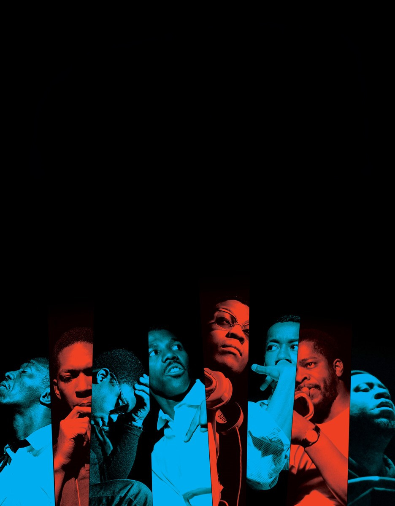

ARTISTS
THE PEOPLE WHO MAKE THE SOUND.
01 / INTRODUCTIONS EVERY ARTIST HAS A SOUND.


01 / 20
02 / THE ROSTER
TWENTY VOICES.
ONE BLUE NOTE.
Different instruments, different generations, and no two voices alike.
Each artist brought something unique to Blue Note, shaping a musical legacy that continues to inspire new sounds today.
PIANO
SAXOPHONE
TRUMPET
THE REST OF THE BAND